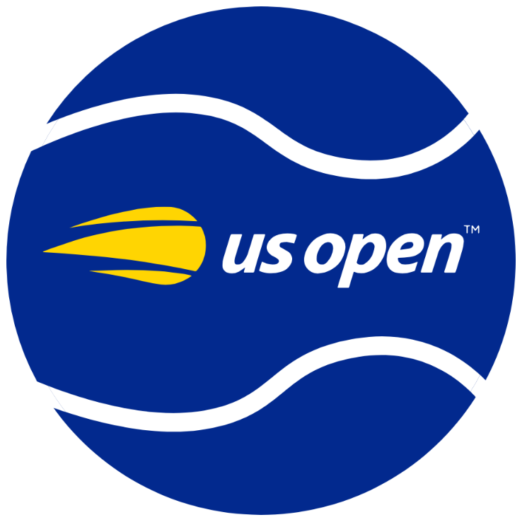

Australian Open
El primero del año, se juega en Enero en Australia y da inicio oficial a la temporada en el tenis.

Roland Garros
El Roland Garros se juega a partir de Mayo en Paris, es de los torneos más populares.

Wimbledon
Inglaterra se vuelve la capital del tenis con este increíble torneo, el único en cesped.

US Open
El último torneo del año, se juega en USA y es donde las estrellas se dejan ver.